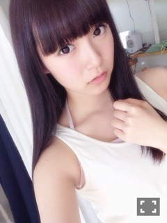
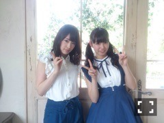
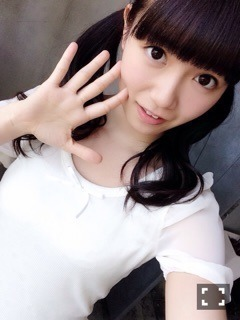
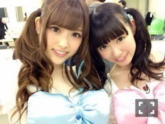

| 2015/06 13 Sat | ひめたん-OoO-その548 |
グラビアザテレビジョン

万理華・さゆ・ひめたん
それぞれのソログラビアとインタビュー
たっぷり載ってます
ひめたんのテーマは
小さな部屋でちょこんと暮らしてそうな
ひめガール......だったと思う♡
衣装はひめが大好きな
かわいいものばっかりだった～
フリフリ～
さゆのインタビュー読んでて
ひとりで泣きそうになった(´,,•ω•,,｀)
UTB+

手寅ちゃんを演じる
かずみん・万理華・ひめたんの
3人でグラビア撮ってもらいました！
いやーはじめての組み合わせ
珍しい組み合わせ
こんなおねーさんたち欲しい♡♡
もしも3人が姉妹だったら
っていう設定でやってみたんだ～
じょしらくのことも
お話しているので
ぜひ手に取っていただけたらと。

他にも告知したいことが
いろいろあるので
楽しみにしててね～
さて、じょしらくですが
落語を発表する日が
決定しましたo(^▽^)o
ひめの担当は22日
「ご」の初日であります！
初めてのことなので緊張するし
上手く行くかわからないけれど
応援しててくださいね～＊

さゆりぼんかわいいだいすきちゅっ
玲奈さんがSKE48を卒業されると
聞いて本当にびっくりしました
去年一年間、あのタイミングで
乃木坂を兼任してくださったことが
今思うと奇跡だったのかなって。
8月で卒業されてしまうというのが
また急で、もう、心の準備が、うう、
寂しさしかないです( ´•̥ω•̥` )
またお会いできたらいいな。
明日は名古屋で個別握手会！！
来てくれるみなさん
よろしくね～♡
もう元気なのでご安心を( ˇωˇ )
楽しいお話いっぱいしよ～
待ってるよ♡待ってるよ♡待ってるよ♡
最後に新制服！解禁！

今回のアンダーメンバー
平均年齢が低い故、ひめはなんと
おねーさん組の制服です......
事件です。
17さいじゃないのかな
もう17さい辞めよかな（°ω°）
ひめ疲れてるのかにゃあ
寝るにゃあ～
ばいばーい
(＊´・ω・＊)
コメント(847)
2015/06/13 23:30